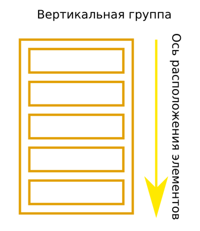
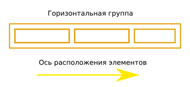
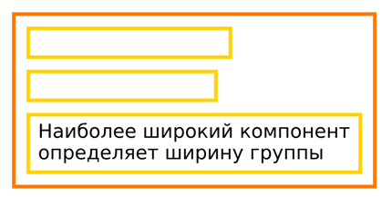
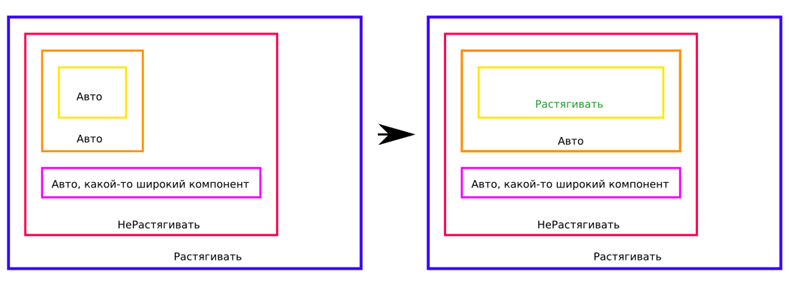
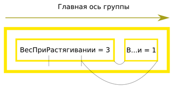
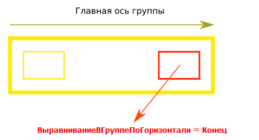
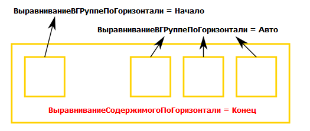

Размещение компонентов на экране
Интерфейс приложения строится из различных компонентов, которые могут располагаться в группах. Каждая группа располагает свои компоненты вертикально, горизонтально или, если это матричная группа, по какой-то сетке. Ось, по которой располагаются компоненты, называется главной осью. Для горизонтальной группы это будет горизонтальная ось, для вертикальной — вертикальная.


Каждый компонент имеет свойства, позволяющие управлять его размерами и местоположением, такие как Ширина, Высота, и т. д.
Ширина и Высота
Ширина и Высота — это самый простой способ указать компоненту конкретный размер в пикселях. Если значение какого-либо из этих свойств отлично от нуля, то компонент будет иметь указанный размер. Несмотря на простоту этого способа, не рекомендуется указывать компонентам конкретные размеры, так как это затрудняет для «1С:Кабинета сотрудника» адаптацию компонентов к разным размерам экрана.
Если не задавать компоненту конкретные размеры, то «1С:Кабинет сотрудника» вычислит его размеры автоматически, например,ширину и высоту группы. Они по умолчанию зависят от размера компонентов ее состава как по главной оси, так и по дополнительной. Если в вертикальную группу поместить несколько компонентов с разными размерами, то ширина группы будет определяться самым широким компонентом состава, а высота суммой высот всех компонентов:

МинимальнаяШирина и МинимальнаяВысота
Это минимальные размеры компонента в пикселях. Меньше этих размеров компонент не будет.
МаксимальнаяШирина и МаксимальнаяВысота
Это максимальные размеры компонента в пикселях. Больше этих размеров компонент не будет.
Эти свойства могут быть полезны в том случае, если у компонента включено растягивание, но хочется ограничить размер области, которую может занять компонент при растягивании.
РастягиватьПоВертикали и РастягиватьПоГоризонтали
Эти свойства включают или выключают растягивание компонента по горизонтали или вертикали. Они имеют тип перечисления, со следующими значениями: Авто, Растягивать, НеРастягивать.
Если установлено значение Авто, то необходимость растягивания «1С:Кабинет сотрудника» определяет автоматически.
Значение НеРастягивать означает, что «1С:Кабинет сотрудника» не будет растягивать компонент.
Значение Растягивать означает, что «1С:Кабинет сотрудника» будет растягивать компонент до размера его родительской группы. Важной особенностью является то, что при включении растягивания у какого-то внутреннего компонента его родительские группы тоже начинают растягиваться, если, конечно, растягивание у них не выключено вручную.
Например, в следующем примере включение растягивания у желтого компонента (переключение свойства РастягиватьПоГоризонтали с Авто на Растягивать) приводит к растягиванию его родительской оранжевой группы.

А у красной группы растягивание принудительно выключено (путем смены с Авто на НеРастягивать), поэтому дальше растягивание не распространяется, несмотря на то, что в синей группе ещё есть место.
ВесПриРастягивании
Это свойство применяется только для растягивании по главной оси группы и позволяет задать пропорции места, занимаемого компонентом, по отношению к его соседям. Стандартное значение 0 говорит о том, что каждый компонент занимает столько места, сколько ему надо, а остальное место распределяется равномерно между всеми компонентами.
Если у одного компонента значение этого свойства больше, чем у другого компонента, например, в три раза, то и места этот компонент будет занимать в три раза больше.

Аналогично и для нескольких компонентов: место в группе по главной оси распределяется в пропорции, определяемой значениями этого свойства.
ВыравниваниеВГруппеПоГоризонтали и ВыравниваниеВГруппеПоВертикали
Данные свойства позволяют управлять индивидуальным положением компонента в группе, если размер группы больше размера, требуемого всем компонентам ее содержимого. Например, если группа растягивается, а компоненты в ней нет.

При наличии конфликтных ситуаций, приоритет имеет первый компонент, с указанным выравниванием. Например, если у первого компонента в группе указано положение в группе Конец, а у второго Начало, приоритет будет у первого компонента и оба компонента окажутся в конце группы.
ВыравниваниеСодержимогоПоГоризонтали и ВыравниваниеСодержимогоПоВертикали
Данные свойства позволяют массово задать положение компонентов содержимого в группе, что бы не указывать их отдельно каждому компоненту. При этом каждый компонент содержимого может переопределить это значение, установив нужное положение в собственное свойство ГоризонтальноеПоложениеВГруппе или ВертикальноеПоложениеВГруппе.
